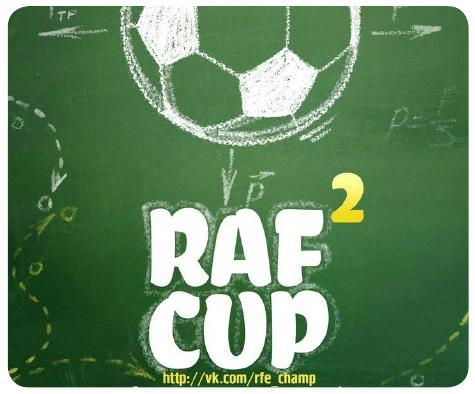
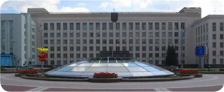

<!DOCTYPE html><html><head>
		<meta http-equiv="content-type" content="text/html; charset=utf-8">
		<meta name="viewport" content="width=device-width, initial-scale=1.0">
		<title>RF&amp;KT</title>
		 <style>
		.fig {
		text-align: center; /* Выравнивание по центру */ 
		}
		<meta http-equiv="keywords" content=""> 
		<meta http-equiv="description" content="">
		<meta name="author" content="RFKT aka rfkt.github.io">  
		<!-- Bootstrap -->
		<link href="https://netdna.bootstrapcdn.com/twitter-bootstrap/2.3.1/css/bootstrap.min.css" rel="stylesheet">
		<link href="https://netdna.bootstrapcdn.com/twitter-bootstrap/2.3.1/css/bootstrap-responsive.min.css" rel="stylesheet">

		<!--[if lte IE 7]><script src="js/lte-ie7.js"></script><![endif]-->
		<!--[if lt IE 9]>
			<script>
			    document.createElement('header');
			    document.createElement('section');
			    document.createElement('footer');
			    document.createElement('nav');
			    document.createElement('article');
			    document.createElement('aside');
			</script>
		 <![endif]-->
	</head>
	<body style="background: url('./img/bg.gif');">
		<a href="https://github.com/RFKT" target=" _new"></a>

		<header style="	text-align: center;width:100%;height:133px;background: #0C5AA6;">
			<div class="container"></div>
		</header>

		<section id="content" style="	padding: 40px 0;margin:0 auto;float:none;-webkit-box-shadow: 0 -5px 5px rgba(0,0,0,.2);-moz-box-shadow: 0 -5px 5px rgba(0,0,0,.2);-ms-box-shadow: 0 -5px 5px rgba(0,0,0,.2);-o-box-shadow: 0 -5px 5px rgba(0,0,0,.2);box-shadow: 0 -5px 5px rgba(0,0,0,.2);">
			<div class="container">
				<div class="span9" style="float: none; margin-left: auto; margin-right: auto;">
					<h4>Date: Oct 10, 2013</h4>
					<h3 style="text-align:center;">Самые свежие новости!</h3><div><h4>Капустные баталии</h4></div><div><p>Учебный год уже начался, а это значит, что пришло время не только для нудных серых будней, но и для веселья! Уже традиционно из года в год на нашем любимом факультете проходит так называемый капустник - самодеятельное (как правило, для узкого круга «своих», хотя студентов с гуманитарного факультета тут тоже можно встретить) шуточное представление, основанное на юморе и сатире. И этот год не будет исключением. Еще с начала сентября первокурсники стали активно готовиться к этому мероприятию - конечно же, не без помощи старшекурсников. В этот раз курировать группы взялся по большей части 2-ой курс, но, помогают абсолютно все.</p><p>При поддержке кураторов капустник проходит непринужденно, раскованно и весело, за что им всем отдельная благодарность.<br>Именно на капустнике новоиспеченные студенты могут проявить себя, порадовать зрителей и порадоваться самим. Это отличный шанс дать о себе знать, как-то 
выделиться из толпы и просто не заскучать. 115-ая поточка, как и всегда, будет наполнена позитивом, отличным настроением, смехом, улыбками, позитивными эмоциями. Капустник - это не только полтора месяца потраченного на подготовку времени, но и достойный отдых. Участвуйте – и ни за что не пожалеете!</p><div style="text-align: right;">Юлия ПАШКЕВИЧ</div></div><div style="text-align: left;"><h4>Радиофизики, мяч и не только</h4> <p class="fig"><p>Совсем недавно мы стали свидетелями второго чемпионата по футболу среди студентов-радиофизиков. В состязании приняли участие пять команд. Игры проводились по субботам и воскресеньям во второй половине дня. Организаторы чемпионата - уже знакомые нам Павел Столяр и Павел Горбанов, которые не так давно устраивали игры по мини-футболу. К ним присоединились Артем Рынкевич и Дмитрий Степанов. Итоги чемпионата ищите в группе в ВК и, конечно же, а более полную информацию - в нашем следующем номере!</p><p><h4>День 
программиста</h4><div><p>В этом году пятница 13-го не могла остаться незамеченной, потому как именно она стала 0xFF днём в году, а значит, мы с вами празднуем День программиста! Не секрет, что многие наши выпускники и студенты профессионально занимаются программированием. Друзья, желаем вам интересных проектов, хорошего кода, новых идей, и пусть самые сложные задачи не вызывают трудностей! Пишите тесты и не забывайте писать комментарии к коммитам! Да, немного юмора. Предлагаем пройти тест (источник habrahabr.ru):</p><div><b>Тест «Вы программист, если...»</b></div><div><ul><li>Cлово «стринги» для вас означает многомерный массив символов.<br></li><li>Вам хоть раз снилось, что Вы программа, запущенная под дебаггером.<br></li><li>C# Вы читаете как «Си шарп», а не «До диез»<br></li><li>Помните свой номер ICQ, IP-адреса пары-тройки машин, номер электронного кошелька, но день рождения жены заносите в календарь с напоминанием.<br></li><li>Понимаете шутку про «отлаживать».<br></li><li>Множественное наследование не 
вызывает у Вашей жены смех.<br></li><li>Ваш компьютер стоит как не сильно подержанная девятка.<br></li><li>Проверяете ложку на NULL, прежде чем отправить её в рот.<br></li><li>Понимаете бинарный юмор.<br></li><li>Очередь, вектор и карта для Вас - связанные понятия.<br></li><li>Знаете про самый объектно-ориентированный способ разбогатеть.<br></li><li>Пытаетесь сразу закрыть скобку, даже если пишете от руки.<br></li><li>Думаете, что всё, что написано после «//», не имеет последствий.<br></li></ul></div><div style="text-align: right;">Павел ГОРБАНОВ</div></div><div style="text-align: left;"><h4>Свежее поступление</h4><div> <p class="fig"></p><p>В этом учебном году увеличилось количество набранных на факультет радиофизики студентов. Если раньше&nbsp;на первом курсе было всего девять групп, то теперь –&nbsp;десять: по специальности «Прикладная информатика»&nbsp;отныне будет учиться не одна, а две группы. Существенно увеличился и проходной порог: для городских 
абитуриентов он составил 204 балла, сельских - 216. Будем&nbsp;надеяться, зимнюю сессию первокурсники переживут в&nbsp;полном составе.</p><div style="text-align: right;">Анастасия ПОЛТАРЖИЦКАЯ</div></div></div></p></p></div>


					<div style="margin-top: 40px;">
					<blockquote style="  position: relative;padding: 1em 20px;border: 3px solid #e0e0e0;margin-top: 0;margin-bottom: 0.5em;"><p style="font-size: 1.3em; text-align: center;"><a href="#content">^ Back to top</a></p></blockquote>
					<div class="pluso pluso-theme-light pluso-multiline"><div class="pluso-more-container"><a class="pluso-more" href=""></a><ul class="pluso-counter-container"><li></li><li class="pluso-counter"></li><li></li></ul></div><a class="pluso-facebook"></a><a class="pluso-twitter"></a><a class="pluso-vkontakte"></a><a class="pluso-odnoklassniki"></a><br><a class="pluso-google"></a><a class="pluso-livejournal"></a><a class="pluso-moimir"></a><a class="pluso-liveinternet"></a></div>
					<script type="text/javascript">if(!window.pluso){pluso={version:'0.9.1',url:'http://share.pluso.ru/'};h=document.getElementsByTagName('head')[0];l=document.createElement('link');l.href=pluso.url+'pluso.css';l.type='text/css';l.rel='stylesheet';s=document.createElement('script');s.src=pluso.url+'pluso.js';s.charset='UTF-8';h.appendChild(l);h.appendChild(s)}</script>
					</div>


					<div id="hypercomments_widget"></div>
					<script type="text/javascript">
					_hcwp = window._hcwp || [];
					_hcwp.push({widget:"Stream", widget_id:11024});
					(function() {
					if("HC_LOAD_INIT" in window)return;
					HC_LOAD_INIT = true;
					var lang = (navigator.language || navigator.systemLanguage || navigator.userLanguage || "en").substr(0, 2).toLowerCase();
					var hcc = document.createElement("script"); hcc.type = "text/javascript"; hcc.async = true;
					hcc.src = ("https:" == document.location.protocol ? "https" : "http")+"://w.hypercomments.com/widget/hc/11024/"+lang+"/widget.js";
					var s = document.getElementsByTagName("script")[0];
					s.parentNode.insertBefore(hcc, s.nextSibling);
					})();
					</script>
					<a href="http://hypercomments.com" class="hc-link" title="comments widget">comments powered by HyperComments</a>

				</div>
			</div>
			
		</section>
		<footer style="text-align:center;height: 100px;line-height: 100px;color: gray;clear: both;">© RFKT</footer>

	

 
  </body></html>
